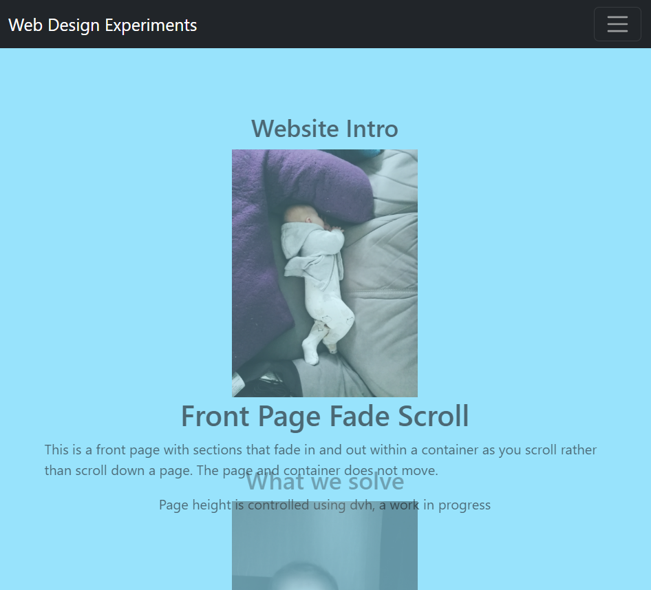
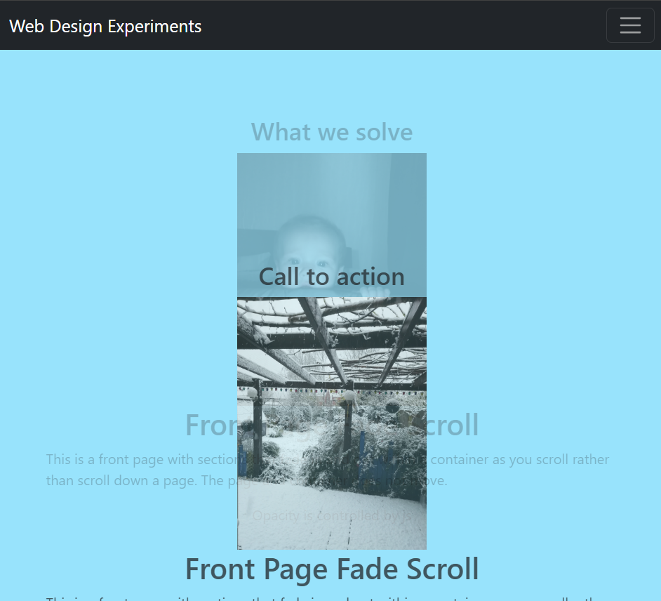
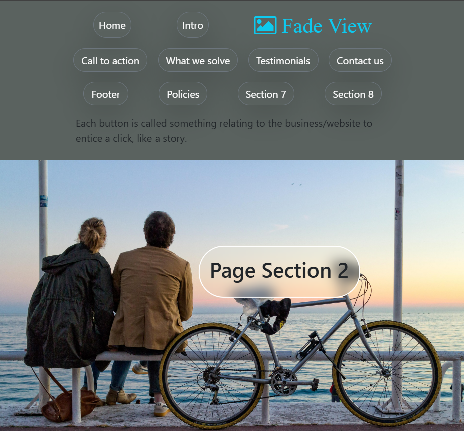

Replace Page Scroll
Alternative front page sections view rather than just stacking sections and scrolling full page
Front Page Fade Scroll
Each section of the page scrolls upwards fading into view and overlapping existing sections which fade out of view. The page is static.


Page Sections Fade View
Each page section is a button in the nav bar and fades into view when clicked. Each button should be given a name that tells a story for each section of the front page rather than call for action, testimonials etc.
